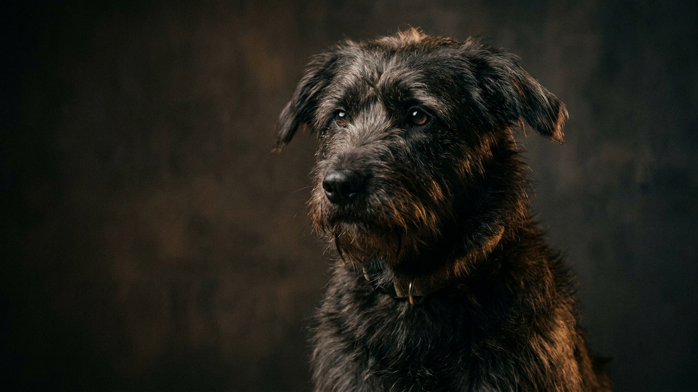

Щенок крутится волчком, пытаясь поймать хвост, — хозяева смеются и снимают на телефон. Это нормально. Взрослая собака делает то же самое по несколько раз в день, иногда до ссадин, — это уже сигнал, который стоит расшифровать. Ниже — почему собаки гоняются за хвостом, как отличить игру от проблемы и что конкретно делать хозяину.
🐾 Хотите понять, что собака говорит вам?
Опишите ситуацию или пришлите видео в AnimaLife — AI разберёт поведение вашего питомца и подскажет, что делать. Бесплатно, ответ за минуту.
Разобрать поведение → Разобрать в MAX →
У вас iPhone? AnimaLife есть в App Store
Причин несколько, и они принципиально разные.
Щенок до полугода, несколько секунд, отвлёкся сам — полная норма. То же у молодой собаки после длинной прогулки, когда она возбуждена. Разовые эпизоды без нарастания частоты у взрослой собаки тоже, как правило, не сигнал тревоги.
Три признака безобидного варианта: собака легко переключается, когда её окликнуть; нет попыток укусить или расчесать хвост до крови; поведение не учащается со временем.
Несколько ситуаций, которые говорят о том, что картина изменилась.
За компульсивным поведением чаще всего стоят хронический стресс или скука как корень, а не разовый испуг. У собак, которых мало выгуливают, держат в изоляции или в среде с постоянными конфликтами, такие паттерны закрепляются быстро. Разобраться с причиной важнее, чем просто пытаться прекратить само действие.
Первый шаг: не подкреплять. Если собака гоняется за хвостом — не смеяться, не подходить, не говорить «нельзя» с интонацией интереса. Реакция хозяина, даже негативная, закрепляет поведение. Встали, ушли в другую комнату.
Второй шаг: нагрузка и «работа носом». Добавьте 15-20 минут нюховых игр к прогулке: кидайте корм в траву, используйте снюффель-мат, прячьте лакомство под стаканы. Нюховая работа утомляет собаку лучше, чем физический бег, и убирает избыток возбуждения.
Третий шаг: обогащение среды дома. Жевательные игрушки, конги с едой, ротация игрушек раз в несколько дней. Собака не должна сидеть дома в пустоте.
Четвёртый шаг: режим и предсказуемость. Кормление, прогулки, время игры — примерно в одно время. Стабильный режим снижает тревожный фон.
Если поведение уже устойчивое, само не уходит после двух недель изменений и тем более если есть физические следы на хвосте — покажите собаку ветеринару, чтобы исключить физическую причину, и зоопсихологу для разбора поведения.
🐾 У вашей собаки так же?
Расскажите в AnimaLife, как ведёт себя ваш питомец, — приложение объяснит причину и даст пошаговый план. Бесплатно, без записи к специалисту.
Разобрать свой случай → Разобрать в MAX →
У вас iPhone? AnimaLife есть в App Store
🐾 Понравился разбор?
Подпишитесь на канал — каждый день разбираем по одному тревожному симптому у кошек и собак: что в пределах нормы, а когда пора к врачу. Подпишитесь, чтобы не пропустить разбор, который может спасти здоровье вашего питомца.
Материал носит информационный характер и не заменяет очную консультацию ветеринара.